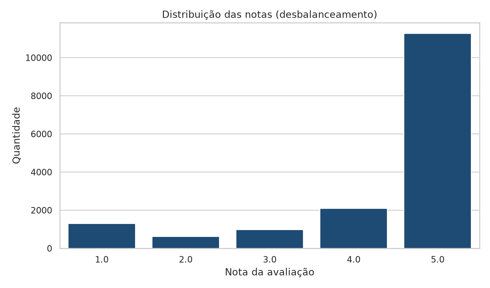
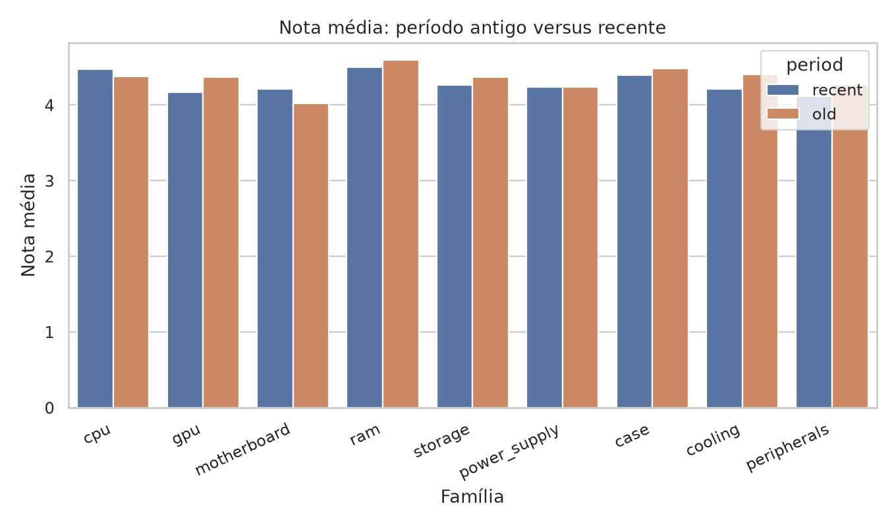
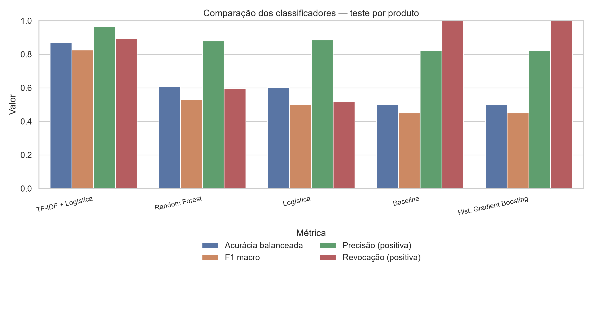

Famílias e equivalências
| Família | Período | Avaliações | Nota | % positivas | % verificadas |
Comportamento dos dados

Notas concentradas em 4 e 5 — motivo para acurácia balanceada.

Mudança de nota entre o quantil antigo e o recente das avaliações.

Baseline majoritário, modelos estruturados e TF-IDF + regressão logística.
Escolha do modelo
| Modelo | Acurácia bal. | F1 | Precisão | Revocação |
|---|
API FastAPI ficou fora deste ciclo (item opcional da disciplina).